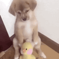
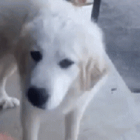

42 · 23 · 3 시간 전 · 원문
수집 당시 댓글 23개
개붕맨 · 9 시간 전

유아학교 · 6 시간 전
↳ 답글 · 우메와모모의평범한일상 · 5 시간 전
아카이브원 · 4 시간 전
두려워요 · 4 시간 전
표정 찡그리는 골댕이 콘
↳ 답글 · 양금냄비 · 4 시간 전
↳ 답글 · 도맘 · 3 시간 전

개드립잼썽 · 4 시간 전
팔짱끼는 그 강아진가
마둥석 · 4 시간 전
도담이 귀여웡
자연인1호 · 4 시간 전
정색하는거 귀엽네 ㅋㅋ
변막 · 4 시간 전
ㅋㅋㅋㅋㅋㅋㅋㅋㅋ
싼디스크 · 3 시간 전
ㅋㅋㅋㅋㅋㅋㅋㅋㅋㅋ다 알아듣네
착한말착한말 · 3 시간 전
허스키였으면 발길질 나왔다 ㅋㅋㅋㅋ
↳ 답글 · 대데맞춤법빌런 · 2 시간 전
쟤 앞다리 하나 없을걸 ㅠ
↳ 답글 · 착한말착한말 · 17 분 전
헉...
Literaly · 3 시간 전
으으으으으으그 · 3 시간 전
ㅋㅋㅋㅋㅋ
Epoch · 3 시간 전
(눈치)
미녀와야스 · 3 시간 전
레벨토끼 · 2 시간 전
맛있는고구마 · 2 시간 전
철학전공자 · 48 분 전
정색마구하기
lIIllIIIl · 27 분 전
쟨 진짜 천재야... 나보다 한국어 잘해.....

